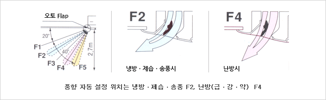

HOME > 제품소개 > 공조/냉난방기기
공조/냉난방기기
롯데기공이 만드는 신개념 냉난방시스템 GHP를 만나실 수 있습니다
실외기
모델별 특징
| 형식 | 마력 | 냉방능력 | 난방능력 |
|---|---|---|---|
| 224형 | 8 hp | 22.4 KW | 28.0KW(H1시리즈), 26.5KW(J1시리즈) |
| 280형 | 10 hp | 28.0 KW | 33.5 KW |
| 355형 | 13 hp | 35.5 KW | 42.5 KW |
| 450형 | 16 hp | 45.0 KW | 53.0 KW |
| 560형 | 20 hp | 56.0 KW | 67.0 KW |
- 폭넓은 운전가능 온도범위, 한냉지에서도 OK 냉방
- 실외 : -10℃DB~43 ℃DB
- 실내 : 13.5℃DB~24 ℃DB (실내상대습도 : 45%~85%) 난방
- 실외 : -16℃DB~15.5 ℃DB
- 실내 : 10℃DB~31 ℃DB (실내상대습도 : 55%~90%)
| 냉각시 | 가열시 | ||
|---|---|---|---|
| 실외기 | 외기온도 | -10℃DB ~ 43℃DB | -16℃WB ~ 15.5℃WB |
| 수열교환기 유니트 | 냉온수온도 | 5℃ ~ 15℃ (브라인사양 -15℃ ~ 5℃) | 35℃ ~ 55℃ |
- 배기탈취 촉매 탑재로 냄새감소
- 실외기 본체 내에서 배기 탈취 촉매를 내장하여 배기가스의 냄새를 억제합니다.

실내기
- 시공성 향상 (28~160형)
- 냉매배관과 드레인 배관 위치를 코너로 분리하여 배관접속 및 드레인 배관의 단열처리 작업이 원할합니다.
- 용량 종류가 다른 실내기를 최대 24대까지 냉매 배관 1계통으로 개별제어 가능
- 바람을 넓은 공간에 불어주는 오토스윙 기구 장착 (28~160형)
- 
- 고천장 설치에도 대응 (28~160형)
- 팬모터 배선에 HT Tap 전환용 중계선을 삽입하면 팬모터 회전수를 한단계 올려 급풍시 4방향 토출로 3.2m의 천장높이까지 대응할 수 있습니다. (보통 사용 상태에서는 급풍 3.0m 까지 대응)
- 천장면에서 최대 80cm까지의 드레인 높이 (28~160형)
- 기존 제품보다 최대 약 25cm의 드레인 높이가 길어져 긴 천장 배관에 대응 가능합니다.
- 280형
- 대규모 점포등에 최적인 대용량 시스템
- 제품높이가 33.5cm
- 대용량이지만 박형설계로 높이가 33.5cm이므로, 천장 내부가 좁은 경우에도 적용할 수 있습니다.
- 드레인펌프 내장, 긴 수명의 필터 기본 장착
- 대용량이므로 설치대수 최소화, 배관공사비 절약
- 넓은 공간에서도 설치대수를 줄일 수 있으며, 설비 및 배관공사의 수고와 비용도 절약할 수 있습니다.
- 토출 도달거리 4m까지 가능
- 단, 280형은 수동풍향 설정이며 그룹제어는 안됩니다.
제어기기
- 01표준무선리모콘 RCS-SH80AK
-
H120XW120XD16mm
표면항균처리
1대의 리모콘으로 최대 8대의 실내기 제어
실내기 1대에 2개의 main, sub 리모콘 설치 가능
그릴 승강 스위치
공조용 환기팬 연동제어
쾌적오토 Flap 제어
시간타이머 / 리모콘 센서 / 서비스 체크 / 풍속 자동 조절 / 필터 센서
- 02유선리모콘 RCS-DH224U
-
H120XW120XD16mm
표면항균처리
최대 8대의 실내기 그룹제어
실내기 1대에 2대의 main, sub 리모콘 제어 가능
공조용 환기팬 연동제어
대상 실내기를 원격 조작 가능
대상 실내기 조작판넬에 접속해서 사용 가능
- 03무선리모콘 RCS-SH80AK
-
H177XW64XD19.5mm
심플한 디자인과 다기능의 무선 리모콘
1대의 리모콘으로 최대 8대의 실내기 제어
실내기 1대에 2대의 main, sub 리모콘 제어 가능
그릴 승강 스위치
공조용 환기팬 연동제어
응급운전버튼으로 자동운전
시간타이머 / 리모콘 센서 / 풍속 자동 조절 / 필터 센서
- 04간단리모콘 KR1AK
-
H120XW70XD16mm
기본조작만 가능한 리모콘으로 섬세조작이 필요하지 않은 호텔 객실이나 오픈 룸에 적합
1대의 리모콘으로 최대 8대의 실내기 제어
운전 및 정지 / 온도 / 풍속 / 풍향 조절 기능
경보기능 및 리모콘 고장 자기진단
- 05ON/OFF 집중 콘트롤러 SHA-KC16KT
-
H121XW122XD14mm
실내기의 운전모드 설정을 위해서는 리모콘 또는 시스템 콘트롤러가 필요함
개별 운전/정지 기능 및 일괄 운전/정지 기능
집중 16그룹 실내기 64대 제어 가능
Main, Sub 합해서 8대 접속 가능
운전 및 이상 표시 기능
- 06멀티콘트롤러 SHA-KC16T
-
H120XW280XD20mm
운전모드 설정과 온도 설정은 불가능하므로 리모콘 또는 시스템 콘트롤러, 인텐리전트 콘트롤러와의 병용이 필요함
개별 운전/정지 기능 및 일괄 운전/정지 기능
집중 16그룹 실내기 64대 제어 가능
집중/개별 설정 기능
Main, Sub 합해서 8대 접속 가능